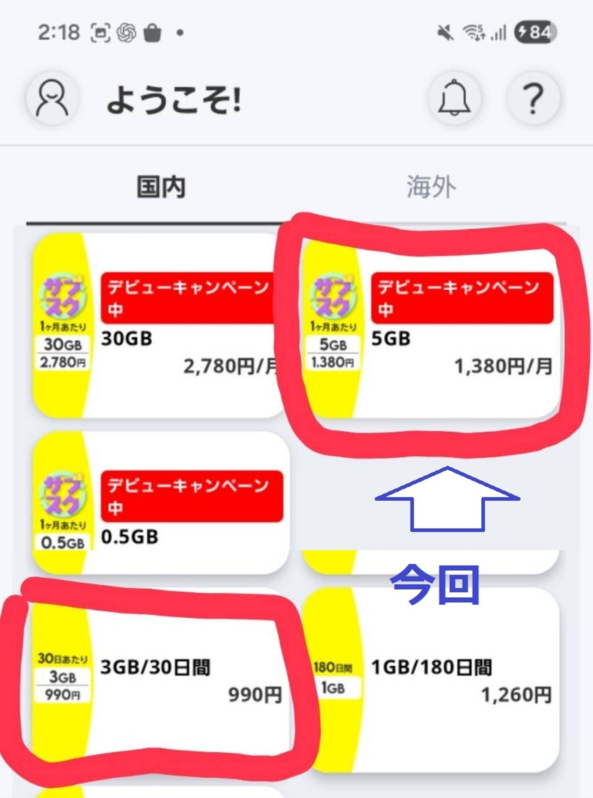
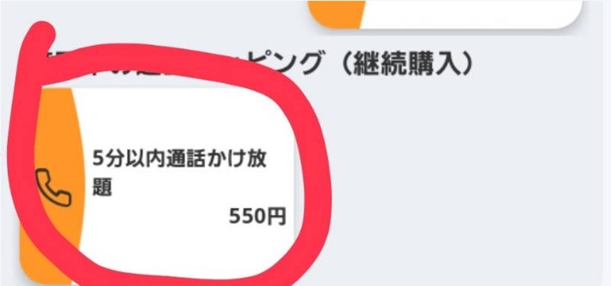

うるがいの話 ある日
最新: povo（ポヴォ）【うるがいの話 ある日】とは 一日だけのプログです
『うるがいの話』の最新一日だけのプログで、通信料が少なく経済的だ。カニの画像をクリックすると全ての日付が載る『うるがいの話』サイトを表示します
|
|
【うるがいの話】 うるがい(ｳﾙｶﾞｲ urugai)とは、『もずくがに』の名前でとても大きくなります。 |
|---|---|
|
|
【カミマヤーの話】 猫のことを方言でマヤーといいます。カミマヤー（kamimayaa）とは、神の猫のことです。 |
|
【たながぁの音楽】 たながぁ（ﾀﾅｶﾞｰ tanagaa）とは手長えびのことで、何種類かあり大きいのは車 エビぐらいになります。 |

|
【ぶながぁの話】 ぶながぁ(ﾌﾞﾅｶﾞｰ bunagaa)とは、赤い髪の毛、赤い身体、そして身長は１ｍ２０ｃｍ ぐらい、川の蟹を食べているの目撃された。場所は沖縄県国頭郡大宜味村のと ある村僕の隣近所に住んでいる爺さんから、聞いた話です。 |
|
|
【ギーマの話】 ギーマ(giima)とは、山原の里山に咲くスズランに似た、 花を付けます。実は食べられます、 気が付くと口の周りが紫になっています。 |
2026年11月01日 (日）povo（ポヴォ）
16:00


990円 データ追加3GB(30日間)：来月からだが
500円 5分以内通話かけ放題
330円 留守番電話サービス
330円 キャリアメール
合計 2,150円
引き落としの口座情報を設定していたら、キャリアメールに認
証コードが配信された。キャリアメールを設定している箇所が
あるので、別のメールに変更したあと削除する予定。留守番電
話は、ごくたまに登録されるのでとりあえず購入。ただ、必須
でないのいずれは、カットすることにする。６千円と比べると
大幅に減だい
契約手続きに
登録メールアドレスを入力してください
とあります
これは
gmailなど他社ですでに
利用しているメールアドレスですか
アイとチャットしながら、フリーのメールを設定する。でも事
前にチャットした時は、準備するものの中になかった。マ、こ
んな具体で、スマホで手続きをしながら、エアイとチャットし
ながら、無事変更できた。
変更直後に直ぐにコドモとライン、変えたよと書いたらコドモ
もポヴォを使っていると！、オ、子供も３名、ポヴォだ。子供
が、ポヴォに変更した翌日、私とヨメにＡＵ会社から電話が掛
かってきていた。二人も取らなかったが、ネットで電話番号を
調べたら、ＡＵ会社の契約のアドバイスをする電話らしいとあ
った。ヨメは、これで二人分の家族割り（千円）が無くなる。